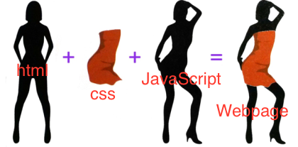

I had Core1 interaction class last semester and I learned the basic html and css skills there.
I am excited to learn an advance coding, however, what I am worried about is that I am bad at fundamental skills, so I always struggle to visualize my design to webpage although I have initial designs in my head.
I think learning coding can make me capable of ui/ux or othere webpage deisgns so it will help me in those digital design career.
I prefer using Visual Stuido code
Yes. I used it in my last semester coding class. I barely understand what it was because I was just following the steps my professor gave, not knowing what was i doing.
html is a language for creating web documents that are visible to the user through a web browser and focuses on the content creation of web documents, which is the basic framework for creating web documents. Css is a language that designs websites by adding or changing various shapes to an existing html, focusing on the shape representation of web documents. In other words, if html is the basic framework, then css is the concept of putting a design on the framework. JavaScript focuses on the action provided to web documents in a language used for functional elements such as opening pop-up windows or checking phone numbers or e-mail addresses, in addition to linking web documents using html. In other words, JavaScript is a concept that puts movement in framework + design. Think of a mannequin. A pure mannequin in no clothes is Html, a pretty dress to wear to the mannequin is Css, and the process of moving the limbs of the mannequin to pose is JavaScript.
Cotton Design is a fantastic website for graphic design inspiration. Their collection of design portfolio shows creativity and innovation in coding project. I found this site in interaction studio class and i really liked how designers use interactive elements here.
Cameron's World is a nostalgic trip back to the early days of the internet. It's an archive of websites from the 1990s, filled with colorful backgrounds, animated GIFs, and y2k design elements. This site reminds me of the playful and experimental aesthetic of web design in early 2000s interent.
Cosmic Symbolism made me mesmerized into the world of universe using zoom-in effect in images. I personally liked this site because this website has psychedelic and illusional aesthetic, which I've been inspiring these days.
s
t
e
a
m
g
r
e
i
n
s
t
e
l
s
y
A pot of comfort and joy,Ramen soothes my soul.
In CSS, block elements like
start on a new line and take up the full width available. Inline elements like and don't start on a new line and only take up as much width as necessary. Inline-block elements are similar to inline elements, but they can have width, height, margin, and padding properties like block elements.